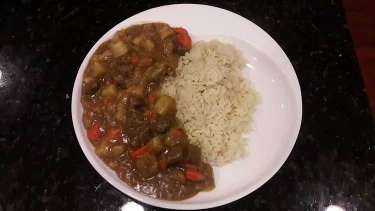

Curry

Description
Japanese-style beef curry,
easy to make! Serve with freshly cooked rice
Ingredients
- 1 tablespoon olive oil
- 1 pound beef stew meat, cut into 1/2-inch cubes
- 2 medium onions, diced
- 5 medium carrots, cut into 1/4-inch rounds
- 6 cups warm water, or more as needed
- 3 large potatoes, peeled and cut into 1/2-inch cubes
- 2 containers of curry sauce mix
Steps
- Heat oil in saute pan over medium heat
- Add beef and fry until browned
- Add onions and carrots and fry until golden
- Pour water, add potatoes
- Cover pan until potatoes are soft
- Add sauce and stir until it thickens